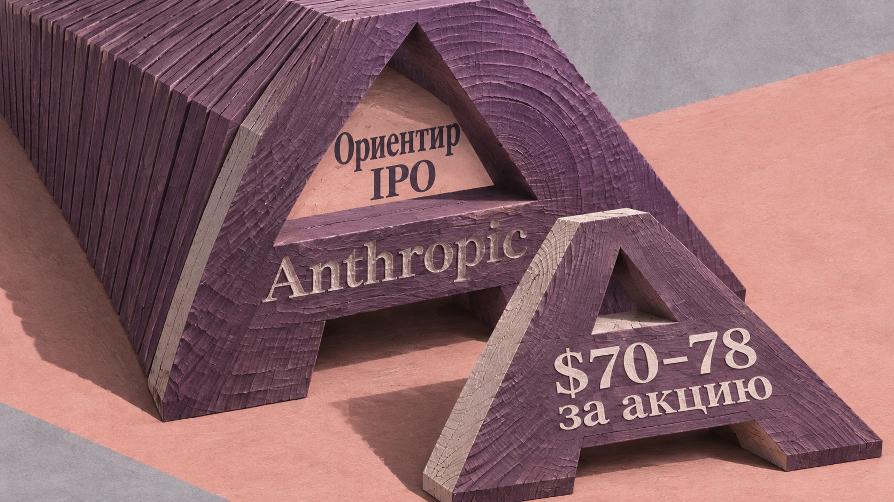

ИИ в бизнесе
Автоматизация рабочих процессов, экономика и внедрение в компаниях.
15 ноября 2026

14 ноября 2026

ChatGPT, Gemini и Perplexity отправляли покупателей в фальшивые магазины
Новости ИИВ исследовании Podqi из 6795 ответов ChatGPT, Gemini и Perplexity на вопросы о покупках в 9% встретились рискованные сайты; среди 4437 обнаруженных доменов — 351 поддельный и 367 неработающих. В части ответов ИИ рекомендовал такие адреса.

ИИ ускорил расчёты промышленных биореакторов в 10 тысяч раз
Новости ИИИсследователи Технического университета Граца разработали CLARA — открытую систему, которая упрощает вычислительные модели биореакторов до 5–50 зон и ускоряет моделирование до 10 тысяч раз.
13 ноября 2026

Дженсен Хуанг ушёл с поста главы NVIDIA на фоне шпионского скандала
Новости ИИNVIDIA объявила об отставке основателя Дженсена Хуанга с постов генерального директора, президента и члена совета директоров. Совет принял её 11 ноября на фоне расследования возможной попытки иностранного разведывательного влияния; временным CEO стала финансовый директор Колетт Кресс. Официальная причина ухода не названа.

Claude теперь сам собирает таблицы с формулами прямо в чате
Новости ИИAnthropic представила Claude Sheets и Whiteboards для таблиц и командной работы, а Claude Data вывела из бета-тестирования. Новые инструменты доступны на платных тарифах с разными условиями.

Claude выполняет поручения, пока коллеги совещаются
Новости ИИAnthropic представила Claude Meetings: ИИ-помощник сможет участвовать в совещаниях Google Meet и выполнять поручения во время разговора. Официально выпуск пока анонсирован как скорый.

Стартап получил $35 млн, чтобы ИИ научился помнить вчерашние разговоры
Новости ИИGraphon Labs получила $35 млн инвестиций для разработки Persistent Intelligence — долговременной памяти ИИ-агентов, связывающей разговоры, документы, изображения и видео. По заявленным компанией измерениям, на тесте LoCoMo точность составила 93,9%.

Alibaba два месяца держала в секрете планы вывести своего производителя ИИ-чипов на биржу
Новости ИИAlibaba раскрыла планы вывести разработчика ИИ-чипов T-Head на биржу в Гонконге: конфиденциальная заявка подана 11 сентября, а процедура выделения объявлена 10 ноября. Сроки, объём и оценка IPO пока не определены.

TSMC вложит до миллиарда в OpenAI и Anthropic
Новости ИИСовет директоров TSMC одобрил инвестиции до $500 млн в акции OpenAI и до $500 млн в Anthropic. На расширение и модернизацию производства чипов компания направит около $40,9 млрд.

Китайцы пошли за покупками к ИИ
Новости ИИВ Китае ИИ-помощники приводят покупателей в интернет-магазины: WPIC зафиксировала 4,3% продаж из Doubao в выборке из 15 магазинов Douyin и до 20% в отдельных категориях, а Dongdong от JD.com привлёк почти 80 млн пользователей.
12 ноября 2026

Mercor привлекла $750 млн: инвесторы оценили бизнес на обучении ИИ в $20 млрд
Новости ИИMercor объявила инвестиционный раунд Series D на $750 млн при оценке $20 млрд. Среди инвесторов NVIDIA, Salesforce и Zoom. Компания обучает и оценивает ИИ-модели при помощи профессиональных экспертов; часть раунда включает выкуп акций сотрудников.

Европа хочет свой ИИ для поиска военных целей: Helsing бросает вызов Palantir
Новости ИИHelsing намерена 11 ноября представить в Берлине военную систему ИИ для европейских армий, конкурирующую с Palantir Maven. Пока название, характеристики и покупатели нового продукта не раскрыты. Reuters сообщило об анонсе 10 ноября.

Anthropic назвала цену акций: компанию могут оценить в $1,3 трлн
Новости ИИAnthropic раскрыла условия IPO: компания предложит инвесторам 825 млн акций по цене $70–78. При средней цене $74 пакет оценивается примерно в $61 млрд, а возможная оценка всей компании достигает $1,3 трлн. Начались встречи с инвесторами; точная цена пока не определена.

ChatGPT теперь продаётся через Amazon
Новости ИИOpenAI добавила ChatGPT Enterprise в AWS Marketplace: корпоративные клиенты смогут приобретать его через действующие механизмы закупок Amazon Web Services и, если условия контракта позволяют, засчитывать расходы на ChatGPT в обязательства по облачному договору. Цена согласовывается индивидуально.
7 ноября 2026
6 ноября 2026

Брокман признал: OpenAI отставала от Anthropic в борьбе за бизнес-клиентов
Громко сказаноГрег Брокман признал слабые позиции OpenAI относительно Anthropic на корпоративном рынке в первом полугодии 2026 года и заявил об ускорении роста в третьем квартале и партнёрстве с JPMorgan Chase.

Сэм Альтман стал Ram Altman после спора об оперативной памяти
Громко сказаноСэм Альтман временно сменил имя профиля в X на Ram Altman после критики его рассуждений о дефиците оперативной памяти и эффективности её использования в дата-центрах.

Макаки по $20 тысяч: фонд сооснователя Palantir вложил $20 млн в проект фермы
ИИ, ты чего творишь?Венчурный фонд 8VC вложил $20 млн в Safer Human Medicine, которая планирует разводить до 30 тыс. макак для исследований. Комплекс в Джорджии пока не построен; FDA развивает альтернативы испытаниям на животных.

Snowflake прописала ИИ-агентам правила: что считать выручкой и сколько тратить
Новости ИИSnowflake представила Business Ontology для единых определений корпоративных показателей и расширила Cortex AI Gateway для контроля ИИ-агентов, их прав и расходов.